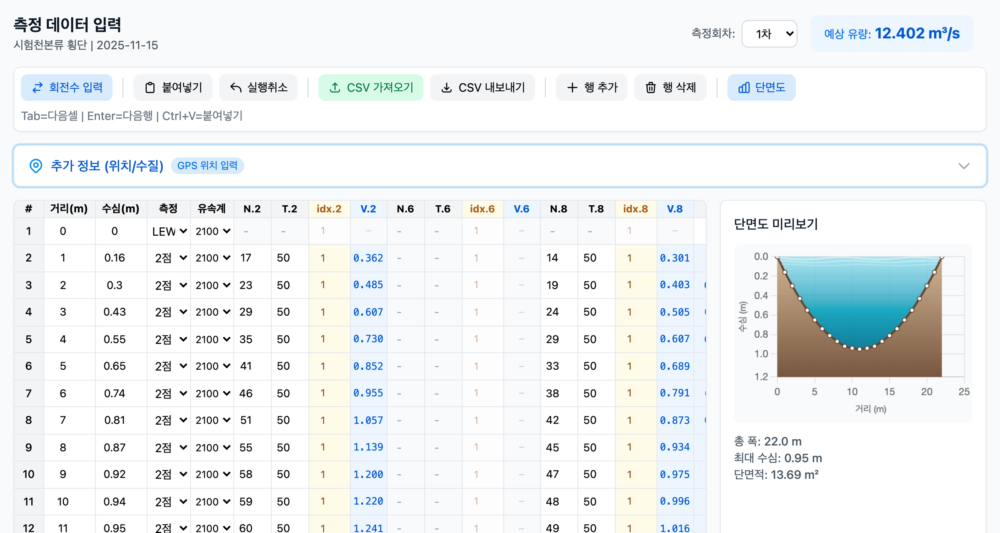
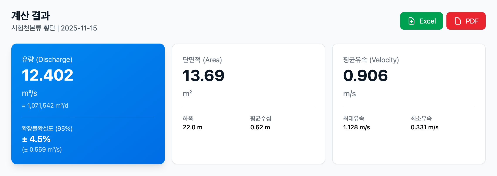
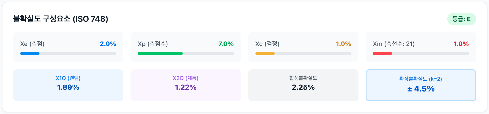
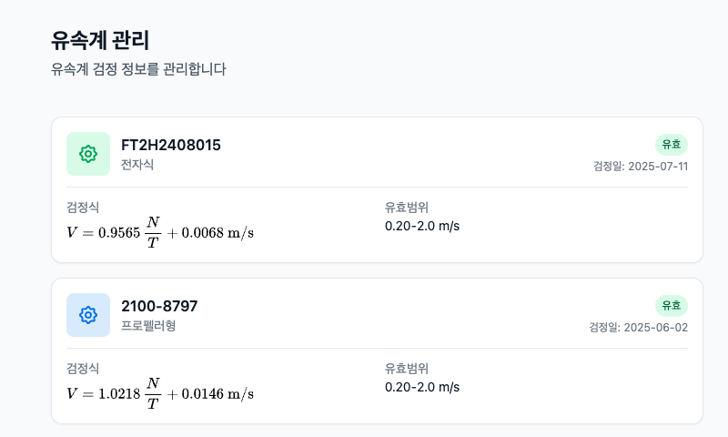
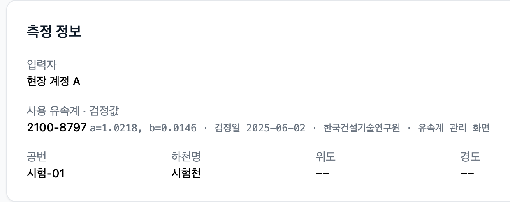
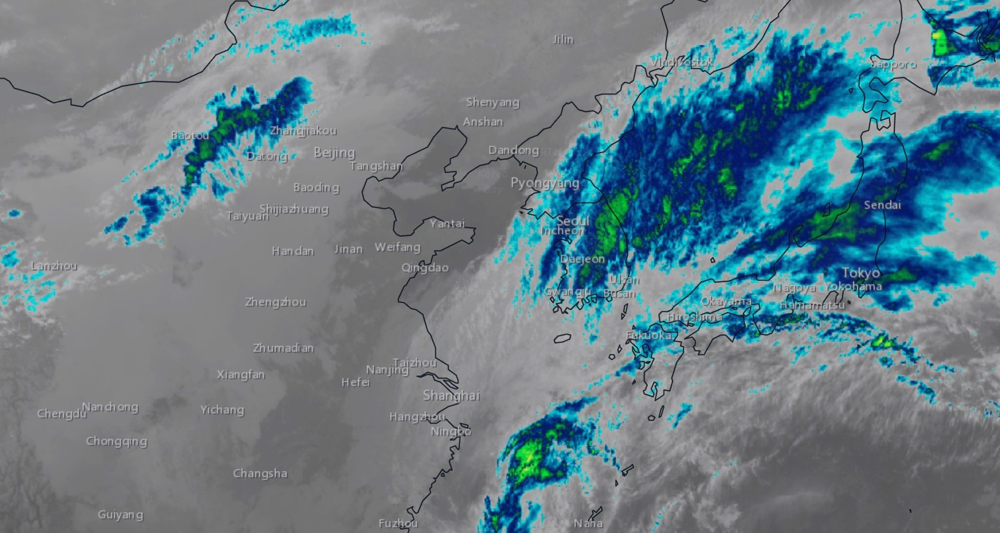
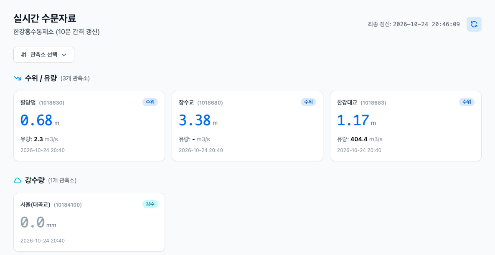

회전수에서 유속을 구합니다
유속계가 돈 횟수 N을 잰 시간 T로 나누고, 유속계마다 정해진 검정식에 넣습니다.
\[ V = a\,\frac{N}{T} + b \]
측선별 거리와 수심, 유속계 회전수를 입력하거나 장비 원본 CSV를 올리면 유량과 ISO 748 불확실도가 나옵니다. 어느 유속계의 어떤 검정값으로 계산했는지도 기록에 남습니다.
장비 원본 CSV 6건으로 시험했습니다. 단면적은 6건 모두 장비가 낸 값과 같았습니다(차이 0.005 m² 이하).
배경은 컴퓨터로 만든 가상의 계곡입니다.

지어낸 시험 자료(시험천)를 실제 서비스에 넣고 찍은 화면입니다. 실제 하천의 측정값이 아닙니다.
현장에서 잰 값이 유량과 불확실도가 되는 과정입니다. 아래 단면이 계산을 한 단계씩 저절로 보여 줍니다. 단계 이름을 누르면 그 단계부터 다시 볼 수 있습니다.
유속계가 돈 횟수 N을 잰 시간 T로 나누고, 유속계마다 정해진 검정식에 넣습니다.
측선의 평균 유속에 수심과 그 측선이 맡은 폭을 곱해 모두 더합니다. 평균 유속은 수면에서 0.2와 0.8 깊이 두 점의 평균입니다(중앙단면법).
ISO 748 방식입니다. 측점(Xe), 측점 수(Xp), 검정(Xc), 측선 수(Xm)를 합쳐 랜덤 불확실도를 구하고, 계통 불확실도와 합성합니다.
아래 화면은 모두 지어낸 시험 자료(시험천)를 실제 서비스에 넣고 찍은 것입니다. 실제 하천의 측정값이 아닙니다.
거리, 수심, 회전수를 넣으면 유속이 계산되고 단면도와 예상 유량이 옆에 나옵니다. 엑셀에서 복사한 표를 붙여 넣어도 됩니다.

계산 결과는 엑셀과 PDF로 내려받을 수 있습니다. 한 건씩 받거나, 여러 건을 분석결과표 한 파일로 받습니다.

측점, 측점 수, 검정, 측선 수가 각각 얼마씩 차지하는지 따로 볼 수 있습니다. 합성불확실도와 확장불확실도(k=2), 등급(E·G·F·P)도 함께 나옵니다.

검정식, 유효 범위, 검정일이 유속계마다 정리됩니다. 새로 검정하면 값이 버전별로 쌓입니다.
FlowTracker2가 내보낸 파일을 손대지 않고 올리면 됩니다. 장비가 계산해 둔 유량, 단면적, 불확실도도 같이 보관하므로 앱의 계산값과 비교해 볼 수 있습니다.
읽는 항목은 측정 시각, 공번, 위치, 측선별 거리·수심·유속이고, 장비가 낸 유량과 단면적도 함께 보관합니다.
날짜와 위치별로 모아 한 번에 내려받습니다.
표에는 수면폭, 단면적, 윤변, 동수반경, 평균유속, 평균유량, 불확실도, 등급이 들어 있습니다.
회원가입하면 입력한 값이 남고, 계산에 쓴 값도 함께 보관됩니다.

시험 자료로 만든 기록입니다. 입력자 이름은 가렸습니다.
유속계 검정값은 지우지 않고 버전별로 보관하며, 언제든 조회할 수 있습니다.
장비 원본을 올리면 장비 값과 앱 값을 한 화면에서 비교할 수 있습니다.
회원가입하면 입력한 값이 남습니다.
저장한 측정은 갱신 시각과 함께 히스토리 목록으로 볼 수 있습니다.
아래 그래프는 지어낸 예시 자료로 그린 것입니다. 기저유출 그래프는 앱과 같은 식으로 계산하므로 슬라이더를 움직여 볼 수 있습니다.
일 유량 자료에서 기저유출을 분리합니다. Eckhardt 필터를 쓰고, 결과는 PDF로 받을 수 있습니다.
bi: i일의 기저유출, yi: i일의 유량, α: 필터 계수, β: 최대 기저유출지수
수위와 유량의 관계를 회귀식으로 구합니다. 수위와 유량의 시계열 자료를 올려 변화를 볼 수도 있습니다.
예: a = 14, h0 = 0.15 m, b = 1.8
날씨를 확인할 수 있는 위성영상을 제공합니다.

앱 화면에서 찍은 실제 영상입니다. 출처: NASA GIBS, Esri.
수위, 강수량, 댐 방류 정보, 증발산량을 실시간으로 갱신해 보여 줍니다.

앱 화면에서 찍은 실제 화면입니다(2026-10-24 20:45). 출처: 한강홍수통제소.
하천망에서 후보 지점을 뽑고, 아래 기준들을 함께 비교해 순위를 매기는 방법입니다. 아래 항목을 가리키거나 누르면 그림에서 그 기준이 강조됩니다.
특허 출원 (출원번호 10-2026-0080613)
소속과 하려는 일(유량 측정, 적지 검토 등)을 알려 주시면 이용 방법을 안내해 드립니다.
이미 승인된 계정이 있으면 로그인해서 바로 쓸 수 있습니다.